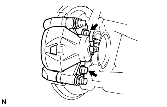
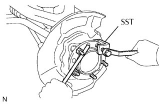
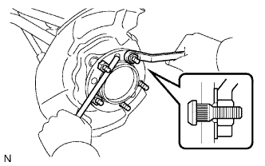

BU LÔNG MOAYƠ CẦU TRƯỚC > THAY THẾ |
| 1. THÁO BÁNH XE TRƯỚC |
| 2. THÁO CỤM XI LANH PHANH ĐĨA TRƯỚC TRÁI |
|  |
Tháo 2 bu lông và xi lanh phanh đĩa.
Đỡ xi lanh phanh một cách chắc chắn.
| 3. THÁO ĐĨA PHANH TRƯỚC |
| 4. THÁO BU LÔNG MOAYƠ CẦU TRƯỚC |
|  |
Lắp tạm thời 2 đai ốc vào các bu lông moayơ, như được chỉ ra trên hình vẽ.
Dùng SST và một thanh đồng hay dụng cụ tương đương để giữ moayơ cầu xe, tháo bu lông moayơ.
| 5. LẮP BU LÔNG MOAYƠ CẦU TRƯỚC |
|  |
Lắp tạm thời một đệm mới và đai ốc vào bu lông moayơ mới, như được chỉ ra trên hình vẽ.
Dùng thanh đồng hay dụng cụ tương đương để giữ cầu trước, lắp bu lông moay ơ bằng cách xiết chặt đai ốc. Sau đó tháo đai ốc và đệm phẳng.
Tháo 2 đai ốc và vòng đệm ra khỏi các bulông moayơ.
| 6. LẮP ĐĨA PHANH TRƯỚC |
| 7. LẮP CỤM XI LANH PHANH ĐĨA TRƯỚC TRÁI |
Lắp xi lanh phanh đĩa bằng 2 bu lông.
| 8. LẮP BÁNH TRƯỚC |